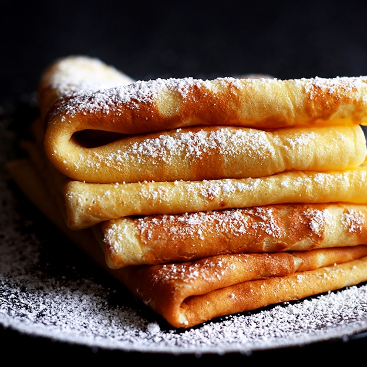

Palatschinken

With this recipe youre Palatschinken will be a success!
Portions: 4
- 150g Flour
- 2 Eggs
- 250ml Milk
- 1 tablespoon Butter (melted)
- 1 pinch of Salt
- 4 tablespoon Butter (to bake)
- For the dough, break the eggs and whisk well. Quickly stir the milk and flour until smooth, mix in the eggs and add a pinch of salt to it
- Slowly stir in the melted butter. If there are lumps of flour in the pancake batter, strain the batter through a large sieve
- Heat a shallow pan (pancake pans are ideal) and melt some butter. Use ladle to pour in enough dough to just thinly cover the base. Pour into the middle and distribute evenly by swiveling in the pan.
- Let the pancakes turn golden brown on one side. Work with medium heat. If the pancake can be shaken well in the pan, it can be turned.
- Let the second side turn golden brown as well.
- Use up all of the batter in this way.
- Keep the finished pancakes warm until they are filled